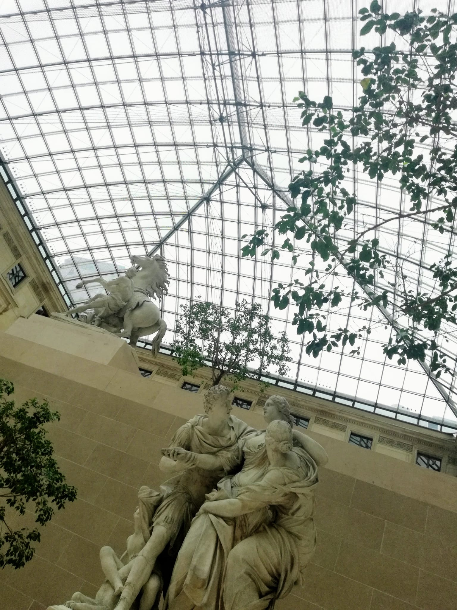
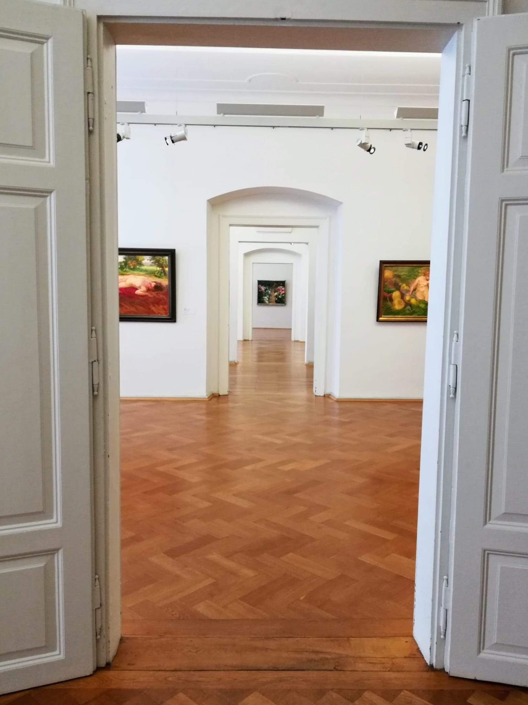
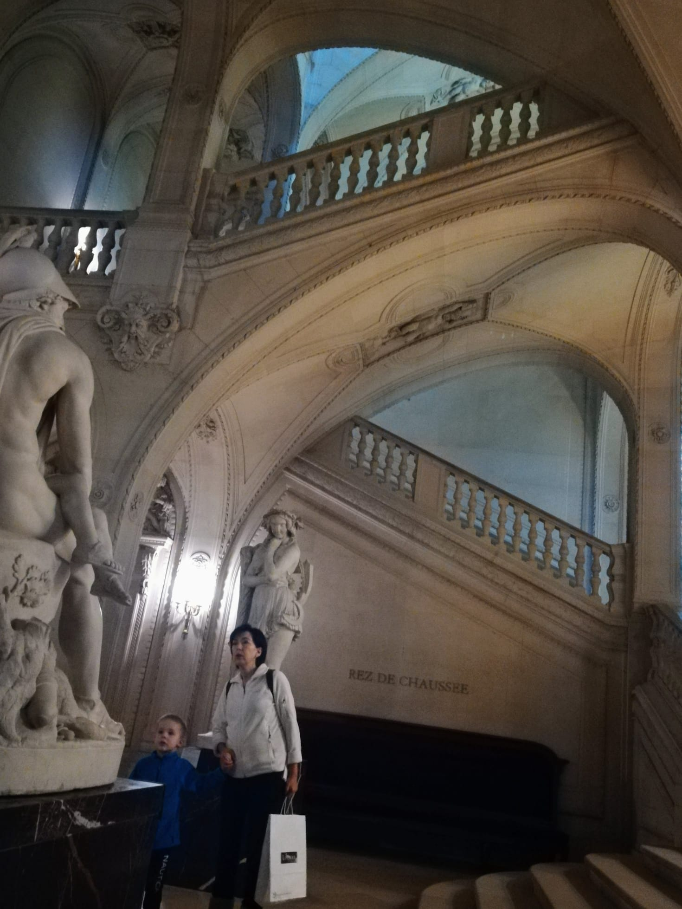
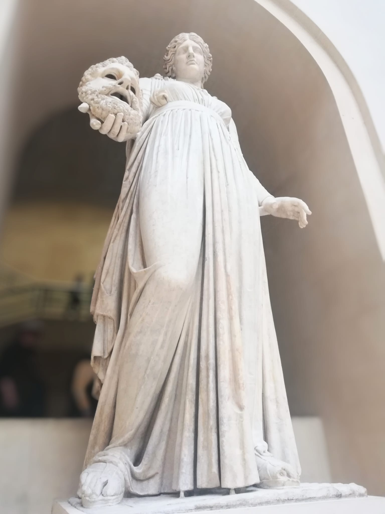
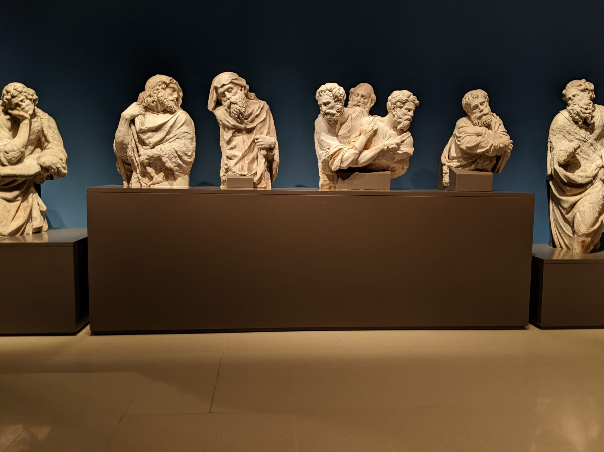

Piranesi
by Susanna Clarke

Piranesi crept up on me, tides of delicately layered aesthetic slowly coming up on to the shoreline until the final, sudden beached landing that ties it all together like brisk, unflinching water to the face.
Warning:
what follows is a review containing plot spoilers. If you wish to read the book knowing no more than what is on the front cover, do not proceed.
The bare prose--frankly, the bare plot--allows the reader's imagination to fill the House in their own way. Whilst there are a few distinct literary and artistic references--the obvious C.S. Lewis, the name Piranesi itself--the House seeps into you, questioning of the reader: what, to you, is the Labyrinth? Is it academia, like it was for many of the characters in the book, for Daedalus--something that starts out as an innocent passion for something...intangibly more and becomes ever more twisted as the goalposts change? Is it the lockdowns we endured during the pandemic, when this book really hit its stride, and when, for many, they finally had to sit alone with their own thoughts, with no distraction--no statues or 16s or Others coming by?

For me, an initially reluctant reader, though I finished the book a few weeks ago, I felt only now, in light of recent climate news, could I give a review of it with a context that would do it due diligence. (I imagine it would, otherwise, be something I had to chew over quite a bit, before I could regurgitate any meaningful words around it.)

Piranesi isn't a book about the climate, per se--but to me, what it says about the importance of confronting your own reality, and how you view others around you, is directly applicable to how we often engage in climate activism discourse. The House, too, becomes a painful allegory for climate change: it disorients, it changes, it becomes unrecognizable: much like an Earth quickly moving from the seasons and the landscapes we know innately, indentured into our childhood, to this odd place that seemingly consciously disappoints and imprisons us at every turn--why is it so hot, in October still; why haven't the leaves turned back to green, in late spring already; why has a blanket red ochre dust replaced once fertile black soils? It threatens suffocation.
The House is valuable because it is the House. It is enough in and of Itself. It is not the means to an end.
—Susanna Clarke, Piranesi
Civil disobedience protests from Extinction Rebellion and JustStopOil have dominated headlines the past week--headlines designed to shock and surprise, headlines that are flexibly truthful, headlines that bury bigger lead stories (such as the fact that, in the UK, legal protections against such protests are fading at a rate disproportionate to the disturbance they cause, which will have authoritarian ripples for years to come).
#SoupGate was one such protest. Its purpose was to command the thought: if we are so outraged about this act, of the glass case surrounding Van Gogh's Sunflowers being temporarily defaced, why aren't we as outraged about the atrocities fossil fuels are committing to the planet? If we continue on, as is, there are no Sunflowers to see--whether that is the Sunflowers tucked away in stodgy museums often used as pawns for subsidies by fossil fuel corporations, or those standing tall in their natural fields: because there is no Planet B. There is no second chance at this. These climate systems are on cycles that span years us humans cannot comprehend. The time in which we rebound from where we are now in CO2ppm to something even vaguely similar to pre-industrial levels can be represented like the slippery, ever-distant halls of the House--onwards and onwards into East and West and North and South wings it goes, the edge of the map something which your fingertips can never quite reach. This only ever means taking more action, more urgently, as it becomes the difference between wings we can still map out, and being so lost in the labyrinth we are rendered helpless as the Other.
I realised that the search for the Knowledge has encouraged us to think of the House as if it were a sort of riddle to be unravelled, a text to be interpreted, and that if ever we discover the Knowledge, then it will be as if the Value has been wrested from the House and all that remains will be mere scenery.
—Susanna Clarke, Piranesi

What makes Piranesi so powerful as a novel is the end, the revelation that our world, too, is one of statues. Is that not what the children carelessly throwing themselves around on the playground that you walk by after work are--an oil fresco, come to life? The man on the Tube that semi-reliably stands next to you on your 7am crawl to the office, who seems perpetually haggard but always smells of that one particular cologne you can't quite put a finger on--a Romantic portrait, come to life? The gaggle of check-out ladies in your Tesco Metro, who you look forward to seeing, because they always seem to be midst gossip whilst you buy your 8,456th cheddar ploughman meal deal--unremovable from an Impressionist's depiction of gathered nymphs of the forest? The very images taken of #SoupGate in action--a journalist's art? The statues of Piranesi's world are flash-frozen aspects of humanity, in contrast to the at first slow degradation of Piranesi's mind, and then contrasted again to the reluctant thaw as his identity begins to unravel.
Only by confronting the need to leave the House and explore reality has Piranesi been able to humanize the statues. This demonstrates the importance of facing your reality, of coming out of Plato's cave. Questioning whether we should leave the cave, take the climate action--well, to that I say--wouldn't you have been disappointed, as a reader, if Piranesi hadn't left? Wouldn't you have been further disappointed if he hadn't wanted to, if Raphael had forced him? Raphael serves as a great model of science communication--she presents facts, not judgements, and reminds him of his bravery in order to add to his own drive to leave the House. Piranesi's agency is crucial—much like our own should be, as collectives demanding change—in this regard, and emblematically complimentary to the themes of reality and unreality present in Piranesi.

Piranesi wasn’t an instant favourite of mine, but I look forward to rereading it in future, savouring the slow burn once again, relishing unravelling the mystery of who Piranesi is and what he will be. I have always loved imagining and empathising with the frescos of humanity around me, a born people-watcher, and Piranesi captures that love and joy in the unknown around us so beautifully and unexpectedly, amidst an atmospheric, subtly menacing mood. This same imagination and empathy is something I will also hope to still maintain, and have others adopt, as we bear witness to further civil disobedience protests in our own quickly unspooling world.

Read this and enjoyed it?
- A similar aesthetic choice, particularly suitable for these dark and stormy times, is of course Frankenstein by Mary Shelley--though with a much pacier and thrilling plot!
- Another favourite that has to be mentioned now that Frankenstein has, is Dracula by Bram Stoker
- The perennial Instagram favourite: The Secret History by Donna Tartt hits these notes well too
- Let me know what you thought and your analysis, and let’s spark a conversation!
Included in this review are images taken whilst visiting museums in France, Barcelona, and Germany--the Louvre, the Catalonian Museum of Art, and the museums at Herrenchiemsee. They, along with the statues of Florence (not pictured), resonated with me at the time of visiting, and then further resonated with me upon reading Piranesi--the white, big airy halls of the Louvre are what I imagined when thinking of the House; as were the long halls of Herrenchiemsee's museums. The statues of the Catalonian Museum struck me as well--austere, yet soft, the way only expert sculptors can manage.